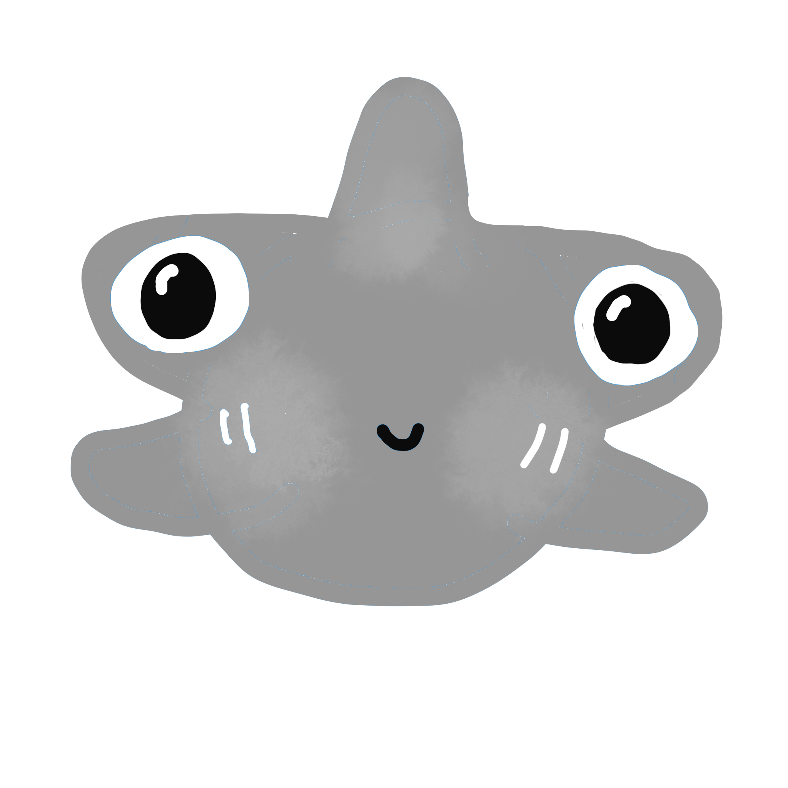
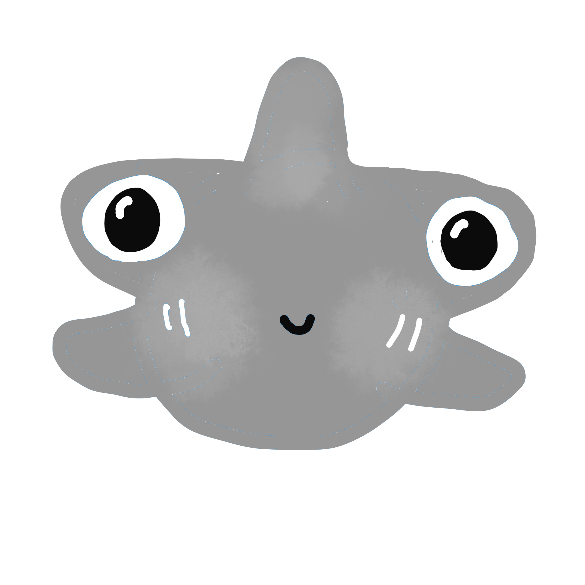

Bobthe Blue shark
It has countershading protects from above and below. The shortfin mako shark is able to elevate its body temperature almost 20°F above the surrounding water.
Jackthe Hammerhead shark
Why they school is still mystery. Their unique eye position allows for 360 degree vision.
Lucythe Epaulette shark
Their protective coloration means safety. Their fins work as feet.
 
